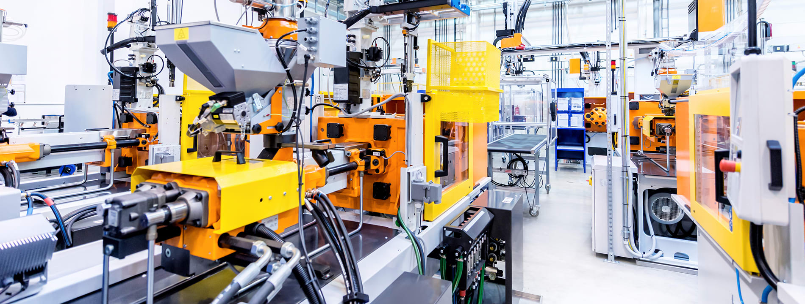
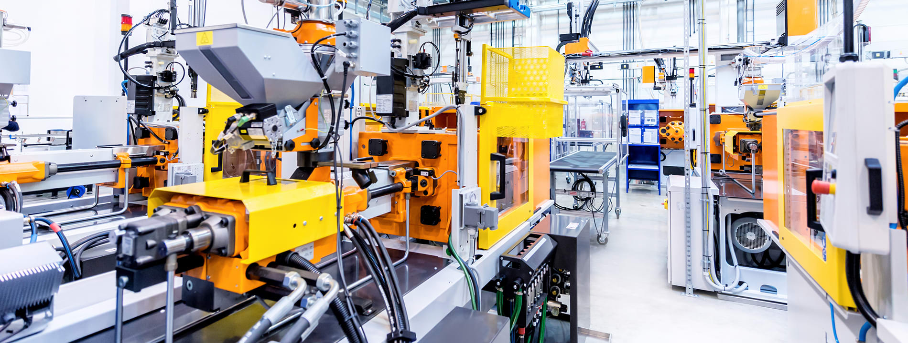
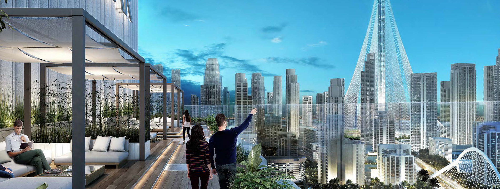
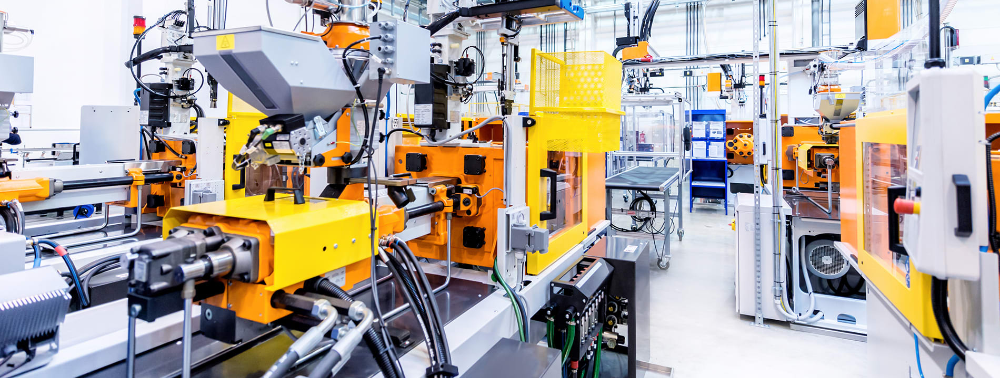
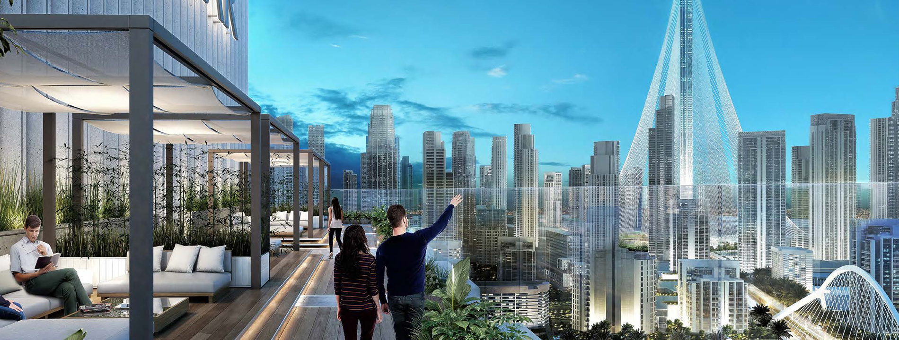
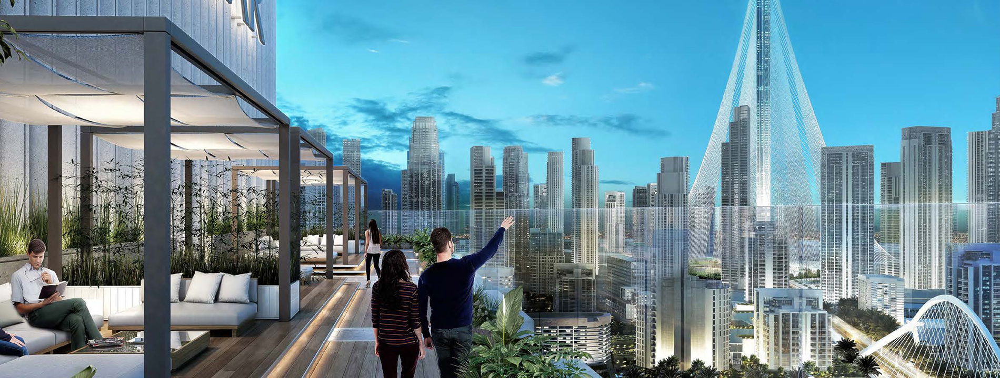
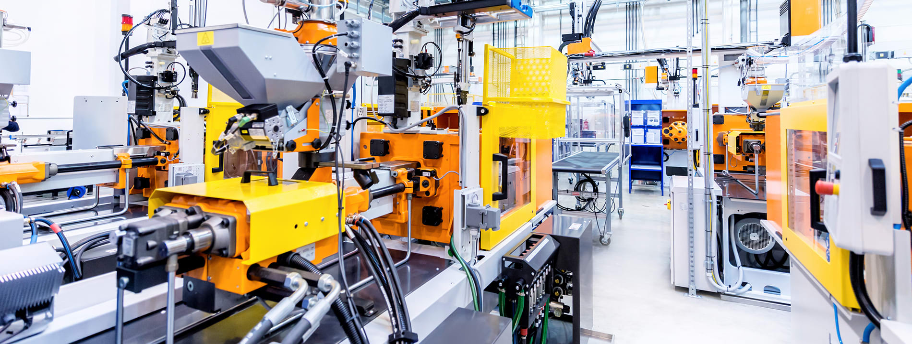
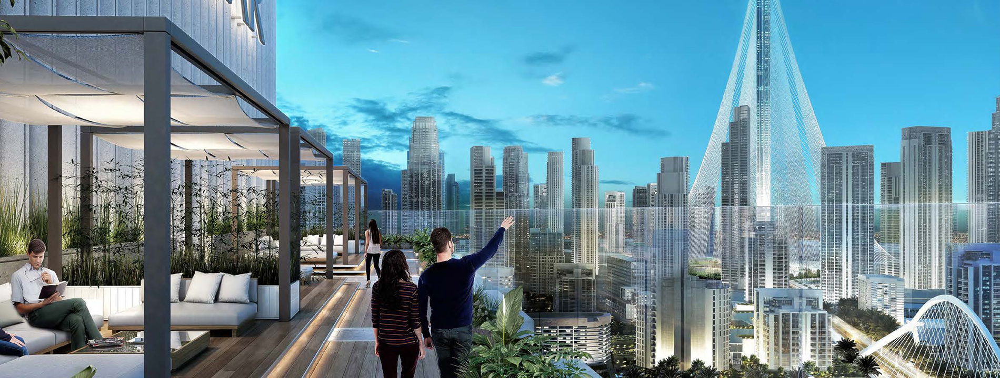

 





Как будущий программист, я могу предсказать, что будущее IT-технологий будет не только увлекательным, но и революционным. В следующих годах мы увидим еще большую автоматизацию и усовершенствование наших смарт-устройств.
Например, искусственный интеллект будет дальше улучшаться и корректировать себя самостоятельно, чтобы стать по-настоящему автономным и способным принимать решения на основе больших объемов данных.
Большие данные (Big data) будут продолжать проникать в нашу жизнь, и будут использоваться в более продвинутых методах анализа данных и прогнозирования. Это позволит улучшить сервисы и продукты, которые мы используем.
Облачные вычисления также будут иметь все большее влияние на IT-технологии будущего, предоставляя нам более эффективное и гибкое хранилище и обработку данных.
Виртуальная и дополненная реальность также станут все более популярными и будут применяться в различных сферах, от образования до развлечений.
Кроме того, кибербезопасность будет находиться в центре внимания, так как все большее количество чувствительных данных будет храниться в электронном виде.
Я искренне верю, что будущее IT-технологий будет увлекательным и полезным для всех нас.